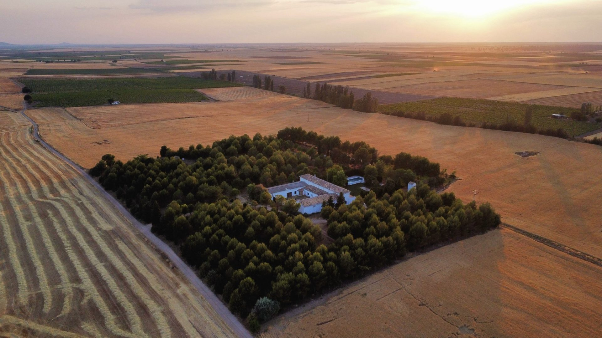
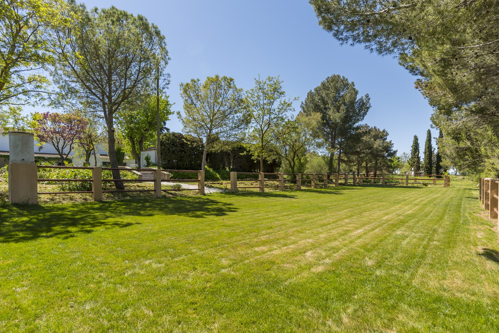
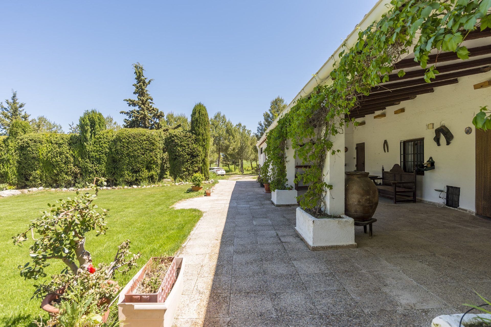
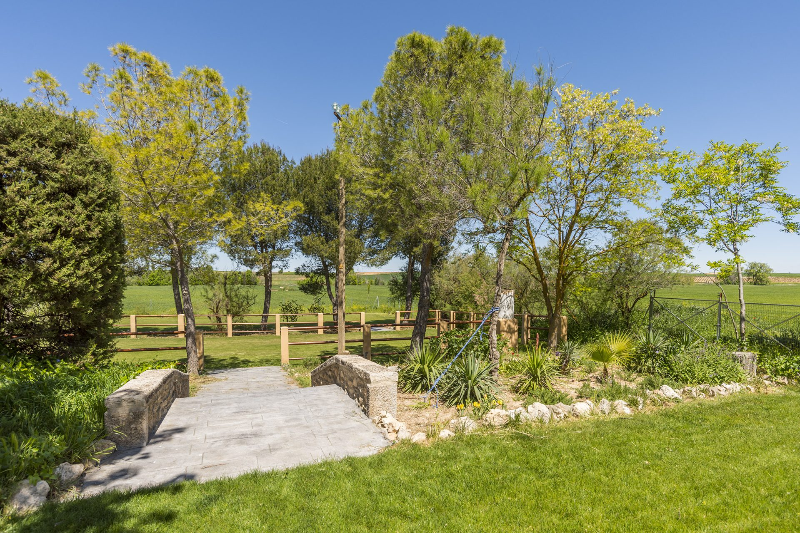
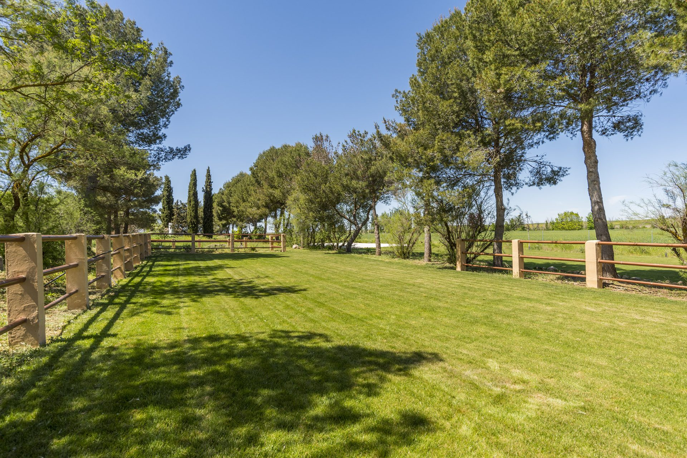
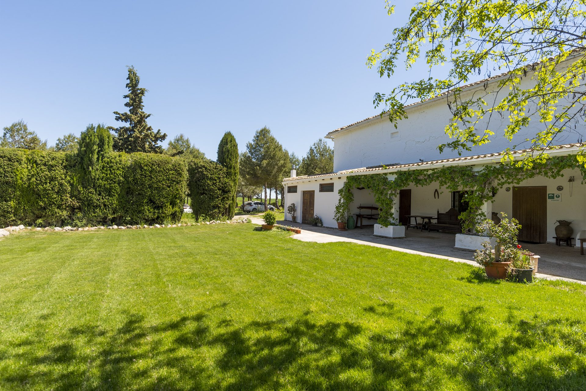
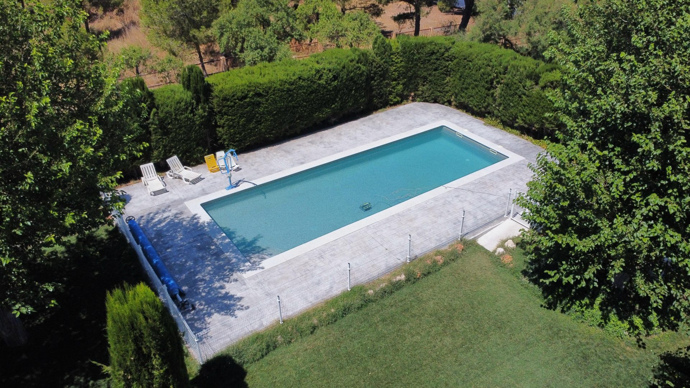

Bodas en la Casa del Marqués
Una finca histórica en plena Mancha, solo para vosotros, a algo más de una hora de Madrid

Vuestro día, en un lugar que es solo vuestro
La Casa del Marqués es una casa histórica rodeada de 30.000 m² de jardines, praderas y pinar, en medio del campo de Horcajo de Santiago (Cuenca), dentro de una Zona de Especial Protección para las Aves. Sin vecinos alrededor, sin otras bodas ese día y sin prisas.
Celebrad la ceremonia bajo los árboles, el cóctel en el porche y el banquete en la pradera, y quedaos a dormir en la propia finca con vuestra familia. Aquí la boda es como vosotros la imaginéis.
Lo que hace especial a nuestra finca
Exclusividad total
Durante vuestra reserva la finca es solo vuestra: jardines, praderas, porche, aseos y piscina en temporada.
Hasta 300 invitados
Espacio de sobra para la ceremonia, el cóctel, el banquete y el baile, todo al aire libre y rodeado de naturaleza.
Dormid en la finca
La casa rural (3 estrellas verdes) aloja a los novios y a parte de los invitados: hasta 14 plazas. Sin carreteras al terminar la fiesta.
Libertad de proveedores
Elegid vuestro catering, música y decoración. Si lo necesitáis, os ponemos en contacto con empresas de catering con las que trabajamos.
Naturaleza y silencio
Pinar, praderas de césped y campos de cereal hasta el horizonte. Atardeceres manchegos que salen solos en las fotos.
Cerca de todo
A algo más de una hora de Madrid y muy cerca de Tarancón, Uclés y Segóbriga, para que vuestros invitados lleguen fácilmente.
Tiempo para prepararlo
Montaje desde 3 horas antes y desmontaje hasta las 12:00 del día siguiente. Si os alojáis, tenéis toda la estancia.
Valorados con un 9,9
Nuestros huéspedes nos han dado el premio Traveller Review Award 2025 de Booking.com con un 9,9 sobre 10.
Imaginad vuestra boda aquí
Todavía no tenemos fotos de bodas montadas, pero así es el escenario que os espera.






Qué incluye
- Uso exclusivo de la finca durante vuestra reserva
- Jardines, praderas y zonas exteriores
- Aseos para los invitados
- Piscina en temporada de baño
- Agua y electricidad para un uso normal
- Limpieza ordinaria final
Lo que elegís vosotros
- Catering y camareros (os ponemos en contacto con empresas con las que trabajamos)
- Menaje y mantelería
- Decoración
- Sonido e iluminación profesional
- Carpas, si las queréis
- Alojamiento en la casa rural (opcional)
Precio
desde 20 € por invitado
Impuestos incluidos. El precio final depende de la fecha, el número de invitados y el alojamiento: os preparamos un presupuesto a medida, sin compromiso.
Pedir presupuestoDe la primera visita al «sí, quiero»
- Visitad la fincaOs la enseñamos sin compromiso y resolvemos todas vuestras dudas.
- Recibid vuestro presupuestoPersonalizado según la fecha, los invitados y si queréis alojaros.
- Reservad la fechaCon la firma del contrato y una señal, la fecha es vuestra.
Venid a conocerla
Dejadnos vuestros datos y os llamamos para concertar la visita y enviaros un presupuesto personalizado. Solo os llevará un minuto.
- Teléfono679 257 317
- WhatsAppEscríbenos por WhatsApp
Preguntas frecuentes
¿Cuántos invitados caben?
Hasta 300 invitados, con espacio de sobra en nuestros 30.000 m² de jardines y praderas.
¿Cuánto cuesta celebrar la boda en la finca?
El alquiler de la finca para tu boda empieza en 20 € por invitado, impuestos incluidos. El precio final depende de la fecha, el número de invitados y si queréis alojaros en la casa, así que siempre te damos un presupuesto personalizado.
¿La finca es solo para nuestra boda?
Sí. Durante el periodo contratado tenéis el uso exclusivo de la finca: jardines, zonas exteriores, aseos y piscina en temporada de baño.
¿Podemos dormir en la finca?
Sí. La casa rural de la finca (3 estrellas verdes) tiene alojamiento para parte de los invitados: 10 plazas en 5 dormitorios, ampliables a 14 con sofás cama. Ideal para los novios y la familia más cercana.
¿Tenéis catering propio?
No. Podéis elegir libremente vuestro catering y el resto de proveedores. Si lo necesitáis, os ponemos en contacto con empresas de catering con las que trabajamos.
¿Qué incluye el alquiler?
El uso exclusivo de la finca, los jardines, los aseos, la piscina en temporada de baño, el agua y la electricidad para un uso normal y la limpieza ordinaria final. No incluye menaje, mantelería, catering, camareros, decoración, sonido e iluminación profesional ni carpas.
¿Cuándo podemos montar y desmontar?
El montaje puede empezar 3 horas antes del inicio de la boda, y el desmontaje debe terminar antes de las 12:00 del día siguiente, salvo que acordemos otra cosa. Si os alojáis en la finca, tenéis todo el periodo de la reserva.
¿Podemos traer a nuestra mascota?
Sí, los perros y gatos son bienvenidos avisando antes de cuántos vendrán.
¿Estaréis presentes durante la boda?
Por defecto la finca es solo vuestra. Si lo preferís, podéis contratar nuestra asistencia técnica presencial durante el evento para ocuparnos de la luz, el agua, los accesos y la coordinación con los proveedores.
¿Cómo reservamos la fecha?
Primero os enseñamos la finca en una visita sin compromiso. Después os enviamos el presupuesto y, si os encaja, la fecha queda reservada al firmar el contrato y abonar la señal.